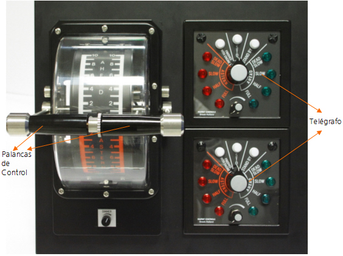

Mediante el Panel de Propulsión el operador puede establecer la demanda de régimen de propulsión en cada uno de los dos ejes del motor, bien mediante Telégrafo o bien mediante las Palancas de Control.

Contiene los siguientes elementos:
- Telégrafo de Babor / Estribor: cuando está seleccionado control de propulsión por Telégrafo (ver apartado Panel de Control 2), el régimen de demanda considerado para cada eje será el determinado por la posición del botón central del telégrafo de cada eje.
- Palanca de Control de Babor / Estribor: cuando está seleccionado control de propulsión Manual, el régimen de demanda considerado para cada eje será el determinado por la posición de la Palanca de Control correspondiente a cada eje.
Para que las demandas de régimen solicitadas, ya sea con Telégrafo o Palanca, sean aceptadas, debe existir algún motor arrancado y embragado en el eje correspondiente.